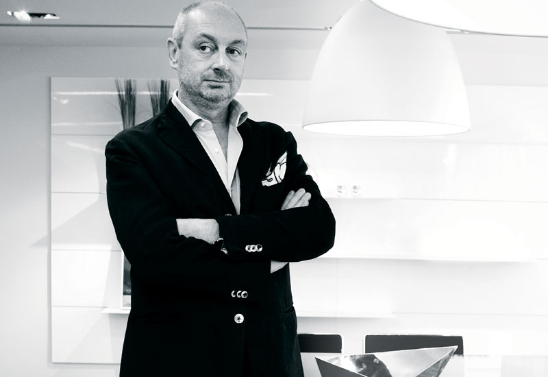

Piero Lissoni is an
Italian
architect and
designer, known for his contemporary furniture design.
Lissoni
was born in 1956 and graduated from the Milan Polytechnic with a degree
in architecture in 1978. Six years later, he began working as an Art
Director and Designer at Boffi, an Italian architecture firm which
specializes in designing kitchens and bathrooms. A few years later, he
founded the architectural firm Lissoni Associates with Nicoletta
Canesi. He continues to design today, and one of his pieces, Sol Light,
a 3-dimensional geometric grid of cubes, was recently auctioned off to
raise money for cancer research. Lissoni is a very minimalistic
designer and has worked with many of the world's most notable design
companies, including furniture maker Kartell and others